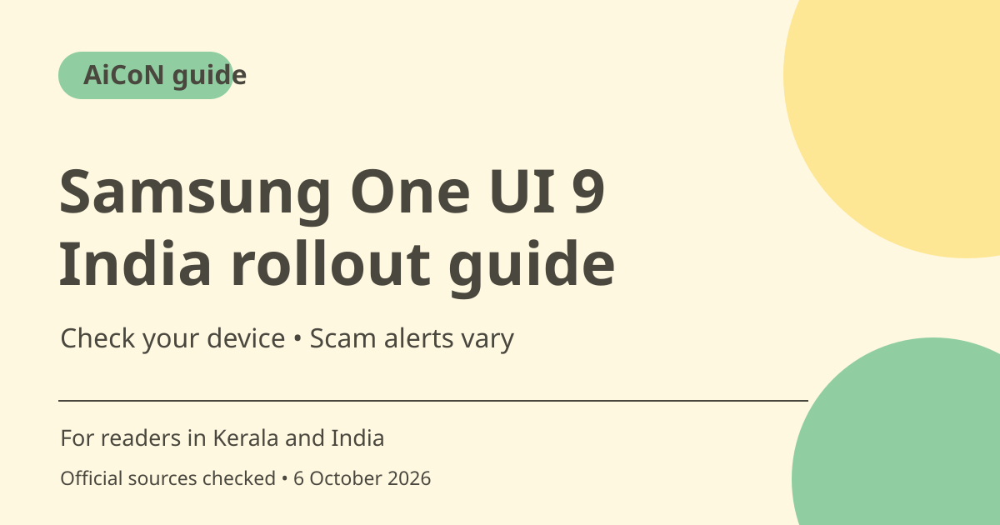

One UI 9 in India: rollout and scam-detection caveats
Samsung has officially announced One UI 9 rollout to more Galaxy devices, starting with the S26 series. Its India and global notices say Scam Detection will be available in India, but give no India activation date. Check your device rather than assuming every feature is live.

What was officially announced?
Samsung's global notice dated 16 September 2026 starts expansion with Galaxy S26, S26+ and S26 Ultra, following debut on Fold8 Ultra, Fold8 and Flip8. Its India newsroom carries the rollout announcement too. This is official product news, not a leaked timetable, but it does not establish the update state of your particular phone.
Scam Detection is not a dated India promise
The announcement says Scam Detection expands to more countries and its footnote says it will be available in Japan, Canada and India. It also says availability can vary by country, language, model and software version. This guide does not turn will be available into available now for every Indian Galaxy phone.
Privacy Alerts have their own device support
Samsung describes on-device AI that flags potential privacy risks, including unnecessary background permission access. A footnote lists supported Galaxy models and says alerts may not account for all relevant factors. This is not a guarantee that every harmful app will be found or that an older phone gets the feature when it receives some other One UI update.
Other features also have limits
The announcement describes My FanCam tracking a selected person, editable Now Brief cards, Interpreter Thread View and document-scanning improvements. Several features need a Samsung Account, supported language or network access. Tracking and translation accuracy are not guaranteed. Check the footnotes for the feature you want instead of assuming the whole marketing list comes to every device.
Who should care in Kerala and India?
A Galaxy owner can use this as a reason to check the official update and support information for their exact model. Do not install an unofficial firmware file to force a feature based on a headline. The sensible first step is checking the device's built-in update route and waiting for a supported release when none is offered.
An alert is not permission to trust a caller
Even when Scam Detection becomes available, it cannot replace independent verification. A call without a warning can still be a scam. Never send money or disclose OTPs because a caller sounds official. Verify high-pressure financial or police claims through independently obtained contacts and use India's official cybercrime reporting routes when needed.
How to use it, step by step
- Identify your exact Galaxy model and current software version in the device settings.
- Use the phone's built-in Software update section to check for an official update. Follow the current on-screen instructions for your model.
- Before updating, make sure important data is backed up, battery and storage are adequate, and the download comes through the supported route.
- If no update is offered, check official Samsung support rather than assuming the newsroom announcement covers your device immediately.
- After a supported update, review the available feature settings, account requirements and permissions.
- For Scam Detection, confirm actual India, language and model availability. Do not assume an activation date that Samsung has not given.
- Keep normal anti-scam habits even if alerts are enabled. Review app permissions and verify urgent payment or identity claims independently.
Cost, eligibility and limits
| Update access | Use the official device update route. The announcement does not describe a separate purchase needed to obtain this software update. |
|---|---|
| Timing | Gradual rollout. No guaranteed date for your model or India's Scam Detection activation established here. |
| Feature limits | Account, language, region and hardware support can differ. Do not assume all features are available on every Galaxy device. |
| Paid extras | Warranty or care menus can expose separate paid services with their own coverage and fees; they are not automatically included by an update. |
Frequently asked questions
Is Scam Detection already active on every Indian Galaxy?
The announcement does not say that. It uses will be available and gives no India activation date.
Will all Galaxy phones get all One UI 9 features?
No such guarantee is made. Samsung's footnotes describe model, region and language limits.
Does no scam warning mean a call is safe?
No. Keep independent verification and never disclose financial secrets because an alert is absent.
Official sources
Checked 6 October 2026. Features and prices can change. This is a guide, not a personal product test.